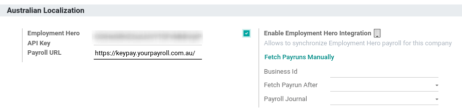

Australia
Configuration
Module Name |
Module Key |
Description |
|---|---|---|
Australia - Accounting |
|
Installed by default when the Accounting Fiscal Localization package is set to Australia. This module also installs the ABA credit transfer and the Remittance Advice report module. |
Australian Reports - Accounting |
|
Includes the Taxable Payments Annual Reports (TPAR) and the BAS report. |
Australia - Payroll |
|
Payroll localisation for Australia. |
Australia - Payroll with Accounting |
|
Installs the link between Australian payroll and accounting. The module also installs the modules: Australian - Accounting; Australian Reports - Accounting; and Australia - Payroll. |
Accounting Customer Statements |
|
Allows the management and sending of monthly customer statements from the partner ledger and the contact form. Also used in New Zealand. |
Employment Hero Australian Payroll |
|
Synchronises all pay runs from Employment Hero with Odoos journal entries. |
Chart of Accounts
The Australian chart of accounts is included in the Australia - Accounting module. Go to to access it.
See also
Taxes and GST
The default Australian taxes impact the BAS Report, which can be accessed through .
In Australia, the standard Goods and Services Tax (GST) rate is 10%, but different rates and exemptions exist for specific categories of goods and services.

Tax Mapping
Within the Australian localisation package, tax names encompass the tax rate as an integral part of their naming convention.
Despite the high amount of taxes in Odoo, these taxes are pretty similar (mostly 0% and 10%), with different tax grid variations for:
Goods
Services
TPAR
TPAR without ABN
See also
Taxes including a TPAR mention impact not only the BAS report but also the TPAR report. Businesses from certain industries need to report payments made to subcontractors from relevant services during the financial year. Odoo combines the use of taxes and fiscal positions to report these payments on the TPAR report. Taxes with the mention TPAR without ABN are used to record amounts withheld from subcontractors without an ABN for the ATO.
See also
Here are the taxes for Australia in Odoo 17.
GST Name |
Description |
GST Scope |
GST Type |
|---|---|---|---|
10% |
GST Purchases |
Purchases |
|
10% INC |
GST Inclusive Purchases |
Purchases |
|
10% C |
Capital Purchases |
Purchases |
|
0% C |
Zero Rated Purch |
Purchases |
|
100% T EX |
Purchase (Taxable Imports) - Tax Paid Separately |
Purchases |
|
10% I |
Purchases for Input Taxed Sales |
Purchases |
|
10% P |
Purchases for Private use or not deductible |
Purchases |
|
100% EX |
GST Only on Imports |
Purchases |
|
10% Adj |
Tax Adjustments (Purchases) |
Purchases |
|
10% |
GST Sales |
Sales |
|
10% INC |
GST Inclusive Sales |
Sales |
|
0% EX |
Zero Rated (Export) Sales |
Sales |
|
0% EXEMPT |
Exempt Sales |
Sales |
|
0% I |
Input Taxed Sales |
Sales |
|
10% Adj |
Tax Adjustments (Sales) |
Sales |
|
10% TPAR |
GST Purchases |
Services |
Purchases |
10% TPAR NO ABN |
GST Purchases |
Services |
Purchases |
10% INC TPAR |
GST Inclusive Purchases |
Services |
Purchases |
10% INC TPAR N ABN |
GST Inclusive Purchases |
Services |
Purchases |
10% C TPAR |
Capital Purchases |
Services |
Purchases |
10% C TPAR N ABN |
Capital Purchases |
Services |
Purchases |
0% C TPAR |
Zero Rated Purch TPAR |
Services |
Purchases |
0% C TPAR N ABN |
Zero Rated Purch TPAR without ABN |
Services |
Purchases |
100% T EX TPAR |
Purchase (Taxable Imports) - Tax Paid Separately |
Services |
Purchases |
100% T EX TPAR N ABN |
Purchase (Taxable Imports) - Tax Paid Separately |
Services |
Purchases |
10% I TPAR |
Purchases for Input Taxed Sales |
Services |
Purchases |
100% I TPAR N ABN |
Purchases for Input Taxed Sales |
Services |
Purchases |
10% P TPAR |
Purchases for Private use or not deductible |
Services |
Purchases |
10% P TPAR N ABN |
Purchases for Private use or not deductible |
Services |
Purchases |
100% EX TPAR |
GST Only on Imports |
Services |
Purchases |
100% EX TPAR N ABN |
GST Only on Imports |
Services |
Purchases |
10% Adj TPAR |
Tax Adjustments (Purchases) |
Services |
Purchases |
10% Adj TPAR N ABN |
Tax Adjustments (Purchases) |
Services |
Purchases |
47% WH |
Tax Withheld for Partners without ABN |
Services |
Purchases |
BAS report
The Business Activity Statement (BAS) report is a critical tax reporting requirement for businesses registered for Goods and Services Tax (GST) in Australia. The BAS is used to report and remit various taxes to the Australian Taxation Office (ATO). With the Odoo BAS feature, businesses can report on the following:
Goods and Services Tax (GST)
PAYG tax withheld

The taxes for GST are collected from the tax grid, which is pre-configured in the system. The tax grid can also be manually set up for any additional special GST. Once the tax for each account is set up, the system automatically slots journal items into the correct tax category. This ensures the BAS report is accurate and reflective of the businesss financial activities.
In addition, the BAS report includes the PAYG tax withheld components (W1 to W5, then summary, section 4). This integration ensures that all payroll-related withholding taxes are accurately captured and reflected within the report.

The module incorporates built-in rules that facilitate the automatic calculation of taxes for types W1 to W5. For a detailed walkthrough and more information on the calculation process for these taxes, please refer to the Payroll app documentation.
See also
Closing the BAS report
When it is time to file the tax return with the ATO, click Closing entry. The tax return period can be configured in . Also, the start date of the tax return period can be defined through the period button (marked by a calendar icon ).
See also
Note
Odoo uses the calendar quarter rather than the Australian FY quarter, which means July to September is Q3 in Odoo.
Before closing the entry for the first time, the default GST payable account and GST receivable account need to be set. A notification pops up and redirects the user to tax group configurations.
Once the GST payable and GST receivable accounts are set up, the BAS report generates an accurate journal closing entry automatically, which balances out the GST balance with the GST clearing account.

The balance between GST receivable and payable is set against the tax clearing account defined on the tax group. The amount to be paid to or received from the ATO can be reconciled against a bank statement.

Important
The BAS report is not directly submitted to the ATO. Odoo helps you automatically compute the necessary values in each section, with the possibility to audit them to better understand the history behind these numbers. Businesses can copy these values and enter them on the ATOs portal.
TPAR report
Odoo allows businesses to report payments made to contractors or subcontractors during the financial year. This is done by generating a TPAR. If you are unsure your business needs this report, refer to the documentation provided by the ATO. You can find this report in .
Configuration
Under or , select a your contractor and set a Fiscal Position under the Sales & Purchase tab.

Upon billing a contact with a fiscal position set to TPAR or TPAR without ABN, the report is automatically generated in .
The report includes the ABN, Total GST, Gross Paid, and Tax Withheld from their TPAR subcontractors.
Total GST: the total tax paid
Gross Paid amounts: shows after registering a payment for those bills
Tax Withheld: shown if the subcontractor is registered with a fiscal position set to TPAR without ABN
The TPAR report can be exported to PDF, XLSX, and TPAR formats.
Customer statements
Customer statements allow customers to see their financial transactions with the company over a certain period, and overdue statement details. These statements can be sent out to customers by email.

There are two ways for customers to download these statements.
From the contact form: Customer statements are under . Select a customer, click the gear icon (), and then Print Customer Statements. This prints out the statement from the beginning of the month to todays date.
From the partner ledger: This option allows for more flexibility in selecting a statements start and end date. You can access it by going to . From here, specify a date range in the calendar menu () for the statement, hover over a partner, and click the Customer Statements tab.

Remittance advice
A remittance advice is a document used as proof of payment to a business. In Odoo, it can be accessed by going to , selecting the payment(s), and clicking .

E-Invoicing via Peppol
Odoo is compliant with Australias and New Zealands PEPPOL requirements. You can find and set up electronic invoicing settings per partner under or , select a partner, and click the Accounting tab.

Important
Validating an invoice or credit note for a partner on the PEPPOL network will download a compliant XML file that can be manually uploaded to your PEPPOL network.
ABA files for batch payments
Introduction
An ABA file is a digital format developed by the Australian Bankers Association. It is designed for business customers to facilitate bulk payment processing by uploading a single file from their business management software.
The main advantage of using ABA files is to improve payment and matching efficiency. This is achieved by consolidating numerous payments into one file for batch processing, which can be submitted to all Australian banks.
Configuration
Settings
To enable batch payments, go to and enable Allow Batch Payments.
Bank journal
Then, go to and select the Bank journal type. In the Journal Entries tab, enter the Account Number and click Create and edit. In the pop-up window, fill in the following fields:
Bank
Account Holder Name
BSB
Account Holder

Important
The Send Money field must be enabled.
Note
The Currency field is optional.
Go back to the Journal Entries tab and fill in the following fields related to the ABA:
BSB: This field is auto-formatted from the bank account
Financial Institution Code: The official 3-letter abbreviation of the financial institution (e.g., WBC for Westpac)
Supplying User Name: 6-digit number provided by your bank. Contact or check your bank website if you need to know.
- Include Self-Balancing Transactions: Selecting this option adds an additional
self-balancing transaction to the end of the ABA file, which some financial institutions require when generating ABA files. Check with your bank to see if you need this option.
Then, go to the Outgoing Payments tab on the same Bank type journal. Click Add a line and select ABA Credit Transfer as the payment method.
Partners bank accounts
Go to or and select a partner for whom you want to add banking information. Once selected, click the Accounting tab, and under the Bank Accounts section, click Add a line to fill in:
Account Number of that partner
Bank
Account Holder Name
BSB
Accounter Holder
Send Money defines the bank account as trusted, which is essential for ABA files and must be enabled if to be used.
Generate an ABA file
To generate an ABA file, Create a vendor bill (manually or from a purchase order). Confirm the bill and ensure the vendors banking information is set up correctly before registering a payment..
Next, click Register Payment in the pop-up window: select the Bank journal, select ABA Credit Transfer as Payment Method, and select the right Recipient Bank Account.
Once payments are confirmed, they appear in . Tick the box of the payments to be included in the batch, then click Create Batch. Verify all information is correct and finally Validate. Once validated, the ABA file becomes available in the chatter on the right.
After uploading it to your banks portal, an ABA transaction line will appear in your bank feed at the following bank feed iteration. You will need to reconcile it against the batch payment made in Odoo.
See also
Buy Now, Pay Later solutions
Buy Now, Pay Later solutions are popular payment methods for eShops in Australia. Some of these solutions are available via the Stripe and AsiaPay payment providers.
POS terminals for Australia
If you wish to have a direct connection between Odoo and your PoS terminal in Australia, you must have a Stripe terminal. Odoo supports the EFTPOS payment solution in Australia.
Note
You do not need a Stripe payment terminal to use Odoo as your main PoS system. The only drawback of not using Stripe is that cashiers must manually enter the final payment amount on the terminal.
See also
Stripe Odoo Payment Terminal
Payroll
Important
Odoo is currently not compliant with STP Phase 2.
Create your employees
To create an employee form and fill in mandatory information, go to the Employees app and click Create. In the HR Settings tab, you can input the mandatory information:
TFN Status: if the employee provides a TFN, make sure to add it to the TFN field
Non-resident: if the employee is a foreign resident
Tax-free Threshold: if the employee is below or above the threshold
HELP / STSL: for all types of study and training support loans (e.g. HELP, VSL, SSL)
Medicare levy Deduction
Medicare levy Exemption
Withholding for Extra Pay
Manage Australian contracts
Once the employee form has been created, ensure the contract is enabled by clicking the Contracts smart button or by going to .
Note
Only one contract can be active simultaneously per employee, but an employee can be assigned consecutive contracts during their employment.
Contractual information related to Australia can be found in the following three places:
Before assigning a salary amount, pay frequency, and other important details to a contract, defining the salary structure, start date, and work entry source is important. In Australia, a Salary Structure is employed to specify the tax schedule applicable to that contract, as defined by the Australian Taxation Office (ATO). Most contracts will fall under the following three structures:
Regular (Schedule 1): the great majority of Australian employees will fall in this category; hence, this structure is assigned by default to all contracts.
Working holiday makers (Schedule 15). When employing working holiday makers (WHMs), other taxes apply. For detailed information on these specific tax implications, refer to the documentation provided by the ATO.
No TFN. Choose this structure if the employee hasnt provided a TFN for over 28 days.

Important
The structures Horticulture/Shearing (Schedule 2) and Artists and Performers (Schedule 3) are only partially complete, and proper tests should be performed before using them to pay employees in your production database. Send your feedback to au-feedback@mail.odoo.com.
The field Work Entry Source is also significant and defines how working hours and days are accounted for in the employees payslip.
Working Schedule: work entries are automatically generated based on the employees working schedule, starting from the contracts start date.. For example, lets assume that an employee works 38 hours a week, and their contracts begins on January 1st. Today is January 16th, and the user generates a pay run from January 14th to 20th. The working hours on the payslip will be automatically calculated to be 38 hours (5 * 7.36 hours) if no leave is taken.
Attendances: The default working schedule is ignored, and work entries are only generated after clocking in and out of the attendance app.
Planning: The default working schedule is ignored, and work entries are generated from planning shifts only.
Important
Additional configurations are necessary to ensure that Odoos payslips automatically compute various penalty rates as defined by an award (overtime rate, public holiday rate, etc). To create these configurations, create new work-entry types for each penalty rate and then assign a penalty rate in % to each. Once this one-time configuration is done, work entries can be manually imported for each period, and Odoo will separate the pay items and rates on the employees payslip.
Important
Timesheets do not impact work entries in Odoo.
The Salary Information tab contains a few essential fields impacting the frequency of pay runs and the management of payslip rules in Odoo.
Wage Type: Select the Fixed Wage pay type for full-time and part-time employees. For casual workers and other Hourly Wage type. For employees being paid hourly, make sure to define the correct casual loading.
Schedule Pay: In Australia, only the following pay run frequencies are accepted: daily, weekly, bi-weekly (or fortnightly), monthly, and quarterly.
Wage (/period): Assign a wage to the contract according to their pay frequency. On payslips, the corresponding annual and hourly rates will be automatically computed.
Note
For hourly workers, please note that the hourly wage should exclude casual loading.
The Australia tab. Most of the fields in this tab are used for Single Touch Payroll (or STP) reporting, which requires a thorough understanding of several details from an employees contract. Review the information on this tab before moving forward with pay runs. This includes the following four fields which impact payslip computations:
Withholding Variation: use this field in case the employees withholding must be varied upward or downward according to their circumstances. E.g., if employee X benefits from a 25% withholding variation, their percentage of tax withheld will vary from whatever amount they were supposed to pay according to their salary structure and situation to a fixed 25%.
Leave Loading: if the employee benefits from a regular leave loading, the value set in the field Leave Loading Rate (e.g., 17.5%) is added to any amount earned when taking annual or long service leaves.
Salary Sacrifice Superannuation: any amount added to this field is deducted, per pay frequency, from the employees basic salary before the computation of the gross salary. Then, this amount is added to the super guarantee line of their payslip. E.g., if employee Y earns 5,000 AUD per month and sacrifices 300 AUD to superannuation, their gross salary will be 4,700 AUD, and 300 AUD will be added on top of their normal super contributions.
Salary Sacrifice Other: any amount added to this field is deducted, per pay frequency, from the employees basic salary before the computation of the gross salary.
Once all important information has been entered, ensure the transition of the contracts status from New to Running to facilitate its use in pay runs.

Assign superannuation accounts
Upon receipt of superannuation details from a new employee, ensure the creation of a new account in to link it to the employee. Input the Super Fund, Member Since date, and TFN number of the employee.
Suppose the employee uses a superannuation fund that does not exist in the database yet. In that case Odoo creates a new one and centralises basic information about this fund, such as its ABN, address, type (APRA or SMSF), USI, and ESA. Super funds can be created or imported in .
Important
Odoo is currently not SuperStream-compliant.
Create pay runs with payslips
Odoo can create pay runs in two ways: via batch or via individual payslips.
Create a batch of payslips
When preparing to generate employees draft payslips (e.g., at the end of every week, fortnight, or month), navigate to and click New. Fill in the necessary info, click Generate Payslips, select the Salary Structure, Department, Employees, and Generate. This method allows the creation of multiple payslips corresponding to each employee in a single batch.
Give the batch a name. (E.g.,
2024 Weekly W1)Choose the pay runs start and end date. (E.g., 01/01/2024 to 07/01/2024)
Click on Generate. A pop-up window asks to confirm which employees should be included in the batch. By default, all active employees are included. You can leave Salary Structure field blank as Odoo automatically selects the structure linked to each employees contract.
The batch creates as many payslips as there are employees. There is no limit to the number of payslips created in a batch.
Verify important information on each payslip. After payslips from a batch have been generated, there is no need to manually compute payslip lines; Odoo does it for you.
Create an individual payslip
In cases where the pay run does not fall into the category of regular payslips, the option exists to create a pay run dedicated to a single employee. Go to and click New. Employ this method when processing one-time payments for employees, including return-to-work payments (ATO Schedule 4), employment termination payments (ATO Schedule 7 and 11), and commissions and bonuses (ATO Schedule 5). When generating an individual payslip, make sure to proceed with the following steps:
Select an Employee; their Contract will be filled out automatically
Add a pay Period
Select a salary Structure (e.g., return-to-work payment)
Unlike payslips generated from a batch, the payroll user must click the Compute Sheet button to generate payslip lines

Understand payslip features
The same features apply no matter how payslips are created (individually or via batch).
Depending on how work entries are created, the Worked Days & Inputs table automatically shows the number of days and hours the employee worked during the payslip period next to the corresponding total gross amount.
Note
There is one line per work entry type, meaning paid and unpaid time-off, in addition to custom hourly penalty rates (overtime, public holidays, etc.) which are automatically added to the table.

In the Other Inputs section, You can add entries such as allowances and extra pay items in the Other Inputs section.
To incorporate various allowances into an employees payslip, create allowances in . Once created, tick the Is an Allowance checkbox for the involved allowances.
Important
Withholding for allowances is not computed automatically. The payroll user has to use the field Withholding for allowance under the other inputs table to manually add the total amount to be withheld across all allowances on that payslip.
Extra pay items are other inputs added to the payslips gross and, as a result, to the withholding amount. An example lies in regular sales commissions, taxed at the same rate as the regular salary (unlike discretionary bonuses, which fall under the ATOs Schedule 5 and its corresponding salary structure). To configure such a custom pay item, go to and create a new entry with the code EXTRA.

In the Salary Computation tab, the payroll user can verify whether all the pay rules have been computed correctly as per employee, contract and salary structure. Here are a few guidelines to better understand the data.

Basic salary: amount from which tax-deductible lines can be subtracted
Gross salary: amount subject to the taxes defined by the salary structure
Withholding: tax amount to be paid to the ATO
Net salary: amount to be paid to the employees bank account
Superannuation Guarantee: amount to be provisioned for quarterly payments to the employees super account
Allowances & Extra pay items: these lines will show if other inputs are added to the payslip.
Other lines: depending on the employee and contract specifics (Medicare, child support, salary, sacrifice, etc.)
When satisfied with the payslip, click Create Draft entry to generate a draft accounting journal entry that the accountant can review. Note that in the case of a payslip batch, this accounting entry will sum up balances from all payslips.
Pay employees
After a batch or a payslips journal entry has been posted, the company can pay their employees. The user can choose between two different payment methods.
Pay the employee in batch via ABA files. This is only possible from the payslip batch level. Ensure the batchs journal entry has been posted to generate the ABA file. From the batch form view, click Create ABA File and choose the desired bank journal. The newly generated ABA file becomes available for download in the field ABA File. It is possible to re-generate the ABA file after applying corrections to existing payslips.
Note
It is always possible to include an individual payslip into an existing batch in an ABA file.
Important
An ABA file can only be generated if both the companys bank account and each employees bank account have been properly configured.
From the employees payslip (), once the payslips journal entry has been posted, click Register Payment. The process is the same as paying vendor bills: select the desired bank journal and payment method, then later reconcile the payment with the corresponding bank statement.
One-time payments
Certain payments, such as Return-to-Work payments and Employment Termination Payments (ETP), are processed only once and require a slightly different approach.
Return-to-Work payments
A Return-to-Work payment is a payment made to an employee to resume working. To process one, create an individual payslip, select the employee, and modify its regular structure to Australia: Return to work. Then, add the gross amount of that payment in the Other Inputs section and compute the payslip. Odoo automatically computes the PAYG withholding, the net amount, and the super guarantee corresponding to that payment.

Termination payments
Before proceeding with the employees ETP, make sure that a Contract End Date has been set on that employees contract so that Odoo can automatically compute the final prorated salary of that employee for the current month.
First, create the final salary for that employee this month. To do so, create an individual payslip. If the contract end date is set correctly, Odoo will automatically compute the prorated salary up to the final payslip date.

Tip
We recommend creating a batch on the fly for that payslip, in which the ETP is added as a second payslip of that same batch.
Create a second individual payslip and include it in the same batch. Change the salary structure on that payslip to Australia: Termination Payments. Before computing the sheet, it is important to provide the payslip with termination details .

Genuine or Non-Genuine Redundancy. This choice impacts the amounts and caps defined per ETP type.
ETP types: see the full list of termination payment types in Other Input Types by filtering by
ETP Type is Set.
Add the relevant ETP type in the Other Inputs table of the payslip, then compute the payslip. Odoo computes the gross ETP, the withholding, the unused leaves, and the net salary according to the rules defined on the ETP, the employee, and their contract. Once payment for both payslips is ready to be processed, an ABA file can be created directly from the batch.
Employment Hero Australian Payroll
If your business is already up and running with Employment Hero, you can use our connector as an alternative payroll solution.
The Employment Hero module synchronises payslip accounting entries (e.g., expenses, social charges, liabilities, taxes) automatically from Employment Hero to Odoo. Payroll administration is still done in Employment Hero. We only record the journal entries in Odoo.
Important
KeyPay was rebranded as Employment Hero in March 2023.
Configuration
Activate the Employment Hero Australian Payroll module (
l10n_au_keypay).Configure the Employment Hero API by going to . More fields become visible after clicking on Enable Employment Hero Integration.
You can find the API Key in the My Account section of the Employment Hero platform.

The Payroll URL is pre-filled with
https://keypay.yourpayroll.com.au.Warning
Do not change the pre-filled Payroll URL
You can find the Business ID in the Employment Hero URL. (i.e.,
189241)
You can choose any Odoo journal to post the payslip entries.
Configure the tax by going to . Create the necessary taxes for the Employment Hero payslip entries. Fill in the tax code from Employment Hero in the Matching Employment Hero Tax field.
How does the API work?
The API syncs the journal entries from Employment Hero to Odoo and leaves them in draft mode. The reference includes the Employment Hero payslip entry ID in brackets for the user to easily retrieve the same record in Employment Hero and Odoo.

By default, the synchronisation happens once per week. You can fetch the records manually by going to and, in the Enable Employment Hero Integration option, click on Fetch Payruns Manually.
Employment Hero payslip entries also work based on double-entry bookkeeping.
The accounts used by Employment Hero are defined in the section Payroll settings.

For the API to work, you need to create the same accounts as the default accounts of your Employment Hero business (same name and same code) in Odoo. You also need to choose the correct account types in Odoo to generate accurate financial reports.